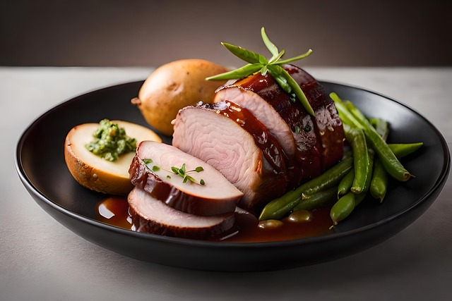

- Am Vortag: Fleisch waschen, trockentupfen, die Schwarte mit einem scharfen Messer einschneiden. Fleisch in einer Schüssel mit dem Öl übergießen. Knoblauch schälen und in Scheiben schneiden, Lorbeerblätter etwas zerbröseln. Beides zu der Ölmarinade geben. Fleisch über Nacht zugedeckt marinieren.
- Am nächsten Tag: Ofen auf 175 Grad vorheitzen. Fleisch aus der Marinade nehmen, kräftig mit Salz und Pfeffer einreiben. 3 EL der Marinade (ohne Knoblauch und Lorbeer) in einem Bräter erhitzen, Fleisch darin rundum anbraten. 100 ml Brühe angießen und im Ofen 50-60 Minuten garen. Dabei ab und zu mit Garflüssigkeit begießen.
- Inzwischen Kartoffeln schälen, waschen und klein schneiden. Nach 15 Minuten Garzeit Kartoffeln zum Fleisch geben, leicht salzen. Übriges Öl samt Knoblauch und Lorbeer darüber geben. Fleisch zwischendurch wenden und fertig garen.
- Inzwischen Kartoffeln schälen, waschen und klein schneiden. Nach 15 Minuten Garzeit Kartoffeln zum Fleisch geben, leicht salzen. Übriges Öl samt Knoblauch und Lorbeer darüber geben. Fleisch zwischendurch wenden und fertig garen.
Schweinebraten mit Ofenkartoffeln
90 Min
Mittel
11.08.2024
| 0,5 kg | Schweinebraten |
| 1 EL | Olivenöl |
| 1 Stück | Knoblauchzehe |
| 1 Stück | Lorbeerblatt |
| 50 ml | Brühe |
| 180 g | Kartoffeln |
| 0,5 Löffel | Senf (mittelscharf) |
| 1 | Piment und Wacholderbeere |
| Salz, Pfeffer (nach Belieben) |
Zubereitung
Vorbereitung ca. 15 Min
Kochzeit ca. 50 Min

Jens Albers